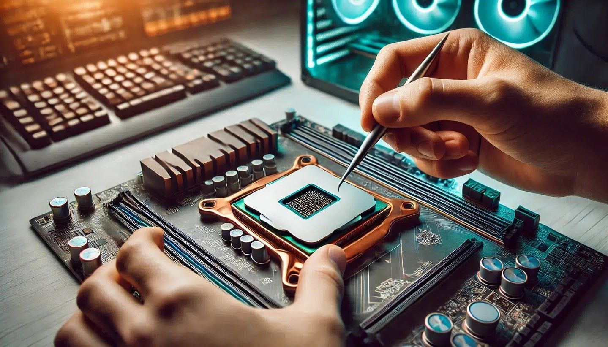

Welcome to Tech World
At Tech World, we believe that technology should empower, connect, and inspire. Founded with a passion for innovation, we specialize in providing high-performance desktop PCs, versatile laptops, and cutting-edge computer peripherals tailored for students, professionals, and hardcore gamers alike.
Learn MoreFeatured Categories
-
Laptops & Desktops
From ultra-portable notebooks for on-the-go productivity to high-powered desktop rigs built for intensive gaming and creative software, explore our vast range of computer hardware designed to fit every budget and workload.
- Computer Peripherals:
Upgrade your workspace and enhance productivity with our wide selection of computer accessories. From tactile mechanical keyboards and high-precision optical mice to vibrant 4K monitors, ergonomic stands, and crystal-clear headsets, we provide all the essential gear needed to complete your setup for work or gaming.
-
Storage Devices
Never run out of space or risk losing vital data. We offer ultra-fast NVMe SSDs, high-capacity external hard drives, and reliable flash drives to keep your files secure and accessible in seconds.

Why Choose Tech World?
We go beyond simply selling hardware.we offer full support to ensure you get the perfect solution for your needs. Every product in our inventory undergoes strict quality checks to guarantee authenticity and longevity. With fast nationwide shipping, hassle-free returns, and a dedicated customer support team ready to assist you with compatibility questions, Tech World is your trusted hardware partner every step of the way.